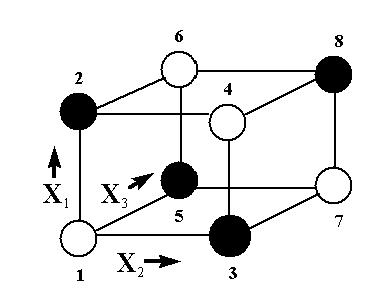

|
5.
Process Improvement
5.3. Choosing an experimental design 5.3.3. How do you select an experimental design? 5.3.3.3. Full factorial designs
|
||||||||||||||||||||||||||||||||||||||||||||||
| Eliminate the influence of extraneous factors by "blocking" |
We often need to eliminate the influence of extraneous factors
when running an experiment. We do this by "blocking".
Previously, blocking was introduced when randomized block designs were discussed. There we were concerned with one factor in the presence of one of more nuisance factors. In this section we look at a general approach that enables us to divide 2-level factorial experiments into blocks. For example, assume we anticipate predictable shifts will occur while an experiment is being run. This might happen when one has to change to a new batch of raw materials halfway through the experiment. The effect of the change in raw materials is well known, and we want to eliminate its influence on the subsequent data analysis. |
|||||||||||||||||||||||||||||||||||||||||||||
| Blocking in a 23 factorial design | In this case, we need to divide our experiment into two halves (2 blocks), one with the first raw material batch and the other with the new batch. The division has to balance out the effect of the materials change in such a way as to eliminate its influence on the analysis, and we do this by blocking. | |||||||||||||||||||||||||||||||||||||||||||||
| Example | Example: An eight-run 23 full factorial has to be blocked into two groups of four runs each. Consider the design `box' for the 23 full factorial. Blocking can be achieved by assigning the first block to the dark-shaded corners and the second block to the open circle corners. | |||||||||||||||||||||||||||||||||||||||||||||
| Graphical representation of blocking scheme |
 |
|||||||||||||||||||||||||||||||||||||||||||||
| Three-factor interaction confounded with the block effect | This works because we are in fact assigning the `estimation' of the (unwanted) blocking effect to the three-factor interaction, and because of the special property of two-level designs called orthogonality. That is, the three-factor interaction is "confounded" with the block effect as will be seen shortly. | |||||||||||||||||||||||||||||||||||||||||||||
| Orthogonality | Orthogonality guarantees that we can always estimate the effect of one factor or interaction clear of any influence due to any other factor or interaction. Orthogonality is a very desirable property in DOE and this is a major reason why two-level factorials are so popular and successful. | |||||||||||||||||||||||||||||||||||||||||||||
| Table showing blocking scheme |
Formally, consider the 23 design table with the three-factor
interaction column added.
|
|||||||||||||||||||||||||||||||||||||||||||||
| Block by assigning the "Block effect" to a high-order interaction | Rows that have a `-1' in the three-factor interaction column are assigned to `Block I' (rows 1, 4, 6, 7), while the other rows are assigned to `Block II' (rows 2, 3, 5, 8). Note that the Block I rows are the open circle corners of the design `box' above; Block II are dark-shaded corners. | |||||||||||||||||||||||||||||||||||||||||||||
| Most DOE software will do blocking for you | The general rule for blocking is: use one or a combination of high-order interaction columns to construct blocks. This gives us a formal way of blocking complex designs. Apart from simple cases in which you can design your own blocks, your statistical/DOE software will do the blocking if asked, but you do need to understand the principle behind it. | |||||||||||||||||||||||||||||||||||||||||||||
|
Block effects are confounded with higher- order interactions |
The price you pay for blocking by using high-order interaction columns is that you can no longer distinguish the high-order interaction(s) from the blocking effect - they have been `confounded,' or `aliased.' In fact, the blocking effect is now the sum of the blocking effect and the high-order interaction effect. This is fine as long as our assumption about negligible high-order interactions holds true, which it usually does. | |||||||||||||||||||||||||||||||||||||||||||||
| Center points within a block | Within a block, center point runs are assigned as if the block were a separate experiment - which in a sense it is. Randomization takes place within a block as it would for any non-blocked DOE. | |||||||||||||||||||||||||||||||||||||||||||||